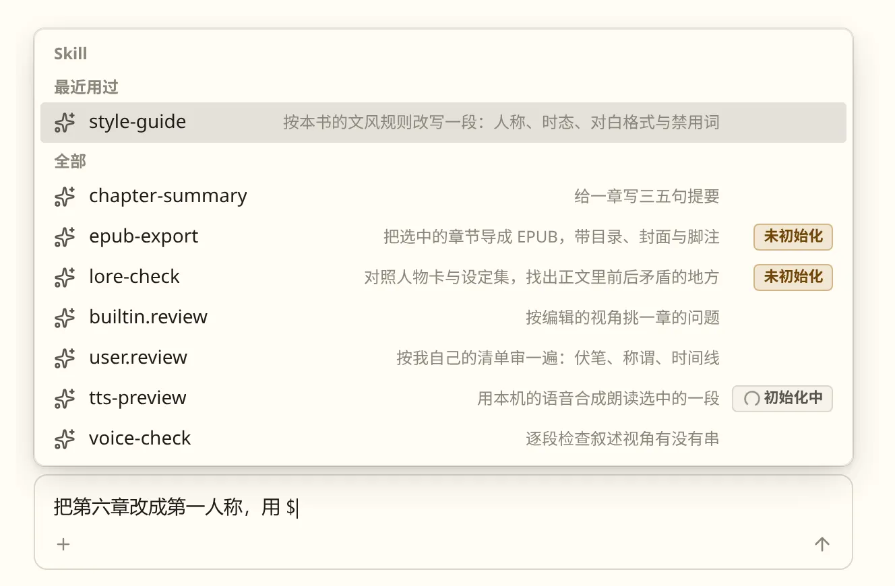
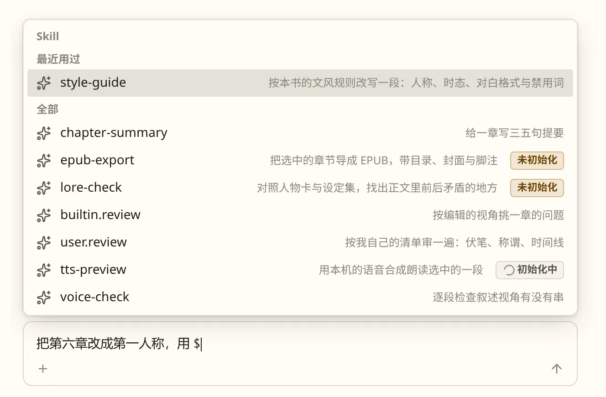
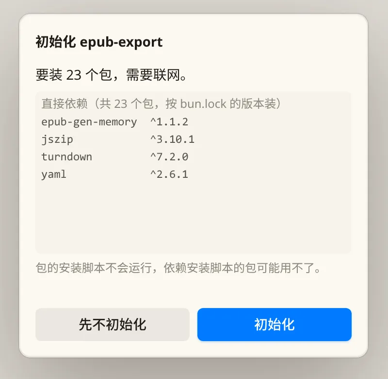
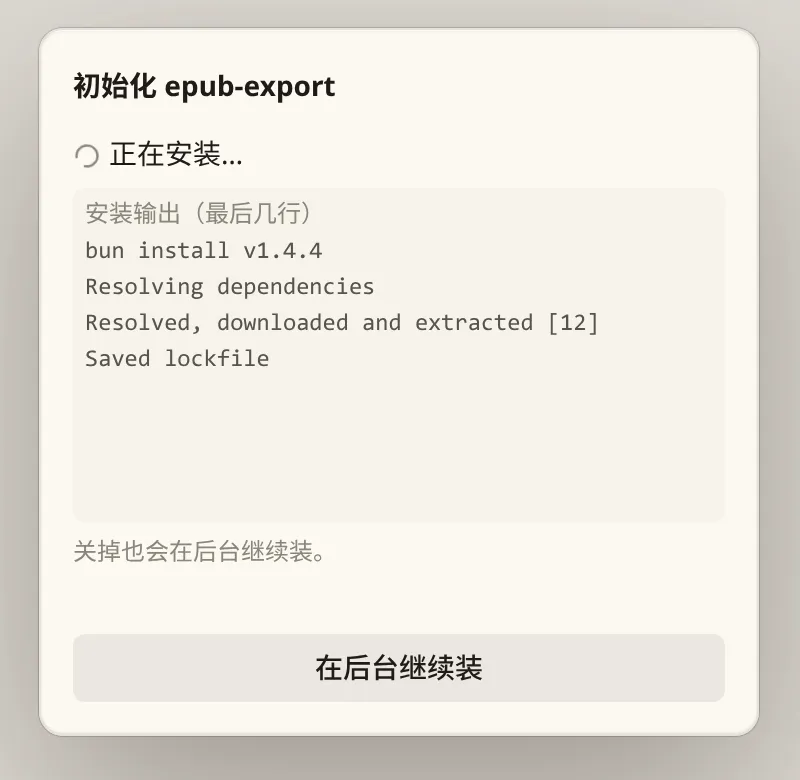
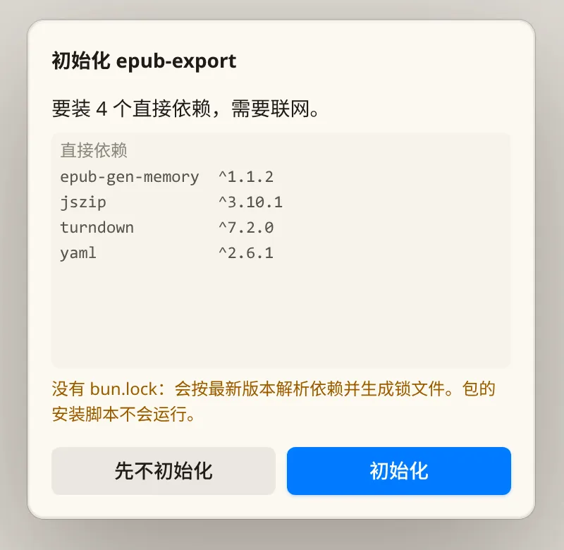
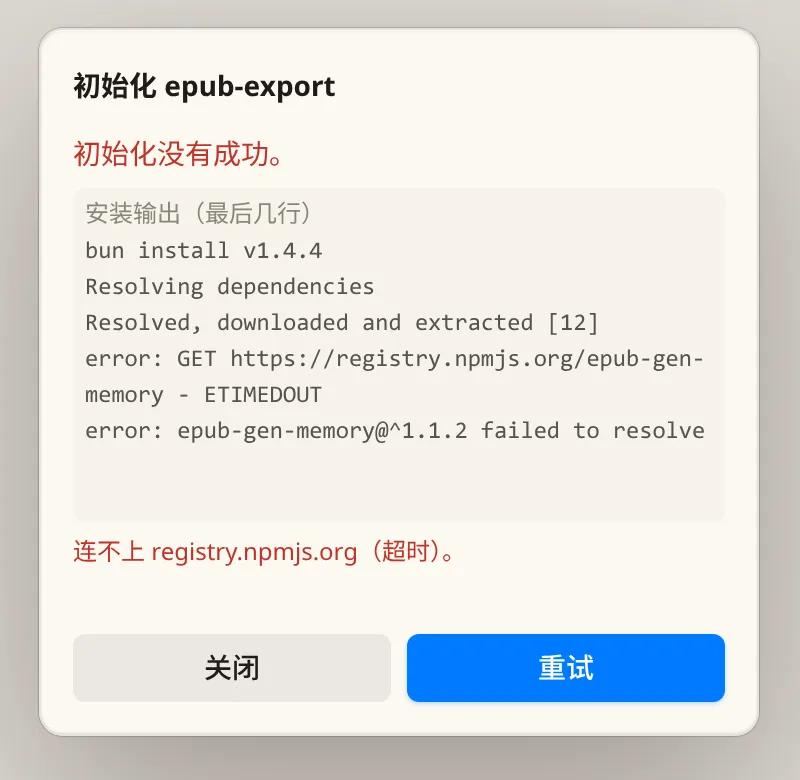

第 3 轮：按第 2 轮的答复改了 $ 菜单的徽标列和确认框，各一道题。第 1、2 轮的决定见页底。
$ 菜单：徽标列的留白
“正在初始化”改成四个字的“初始化中”，与“未初始化”一样宽，徽标列就只留一个徽标的宽度、间距也收小了。说明的右端每行对齐，符合上一轮写进规范的“同一种零件落在同一列”。Skill 页的徽标同样改叫“初始化中”。

没有徽标的行说明贴到最右，右边不再留空；带徽标的行说明往左让出一个徽标宽，所以说明的右端不再全对齐。




每种状态都是三块：一行状态、中间一块（确认时是直接依赖，装的时候和失败后是安装输出）、两行说明。三块的位置与大小固定，状态之间只换里面的文字、颜色与按钮。
这条原则已写进 nb-ui 开发规范（“几何、排版与动效”与自检清单）和 Skill 的 Spec。
$ 菜单：右边空白太多（本轮改了，见上）。$ 菜单：用黄色徽标。$ 菜单：名字与一行说明，未初始化的标出；最近用过的在前；无效的不列；白名单为空时一句说明加去设置的入口。